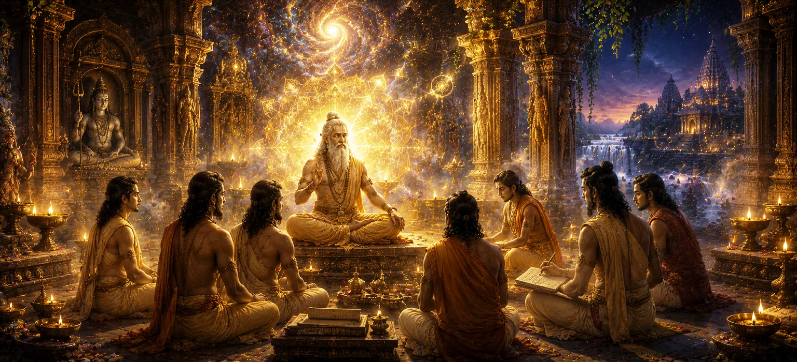

The Sacred Mantra and Its Teaching
Transitioning from the macrocosmic geography of the fourteen worlds and planetary spheres, Chapter 20 of Uma Samhita turns its profound focus inward, exploring the esoteric science of divine sound in The Sacred Mantra and Its Teaching. Having mapped the outer architecture of the universe, the scripture now reveals the internal technology of liberation—demonstrating how sacred syllables, focused concentration, and mantra japa act as direct bridges connecting the human soul to the supreme reality of Lord Shiva across an exhaustive elevenfold framework.
This chapter details the profound mechanics of mantra repetition, the purity of intention required for effective meditation, and the transformative power of divine resonance through eleven distinct analytical pillars. Through these teachings, seekers learn how sacred utterances dissolve mental impurities, awaken dormant spiritual energy, and bestow ultimate peace under the grace of the divine.
Core Topics in This Text (11 Pillars)
- 01 The Esoteric Science of Sacred Sound (Shabda) →
- 02 The Mechanics and Benefits of Mantra Japa →
- 03 Purification of the Mind and Dissolution of Ego →
- 04 The Vital Role of Sincerity and Complete Surrender →
- 05 Attaining Higher Realization and Divine Grace →
- 06 Subtle Chakras and Internal Energetic Resonance →
- 07 Breath Control and Pranayama in Mantra Practice →
- 08 Overcoming Mental Distractions and Obstacles →
- 09 The Role of the Guru and Sacred Initiation (Diksha) →
- 10 Daily Sadhana and Lifelong Consistency →
- 11 Transitioning from Inner Mantra to Righteous Duty →
1. The Esoteric Science of Sacred Sound (Shabda)
This opening section establishes that sound is not merely a physical phenomenon, but the very fabric of cosmic manifestation. Uma Samhita explains how divine vibration (Shabda Brahman) underlies all forms in the universe, serving as the primordial energy that sustains existence.
By engaging with sacred mantras, the spiritual seeker tunes their personal consciousness to this universal frequency, harmonizing individual breath and thought with the eternal rhythm of creation.
2. The Mechanics and Benefits of Mantra Japa
The text details the precise practice of japa (meditative repetition), explaining how rhythmic vocalization and silent mental repetition work together to pacify restless thoughts and center the wandering mind.
Uma Samhita emphasizes that continuous, sincere repetition builds a protective spiritual armor around the practitioner, shielding them from negative influences and cultivating deep inner stability.
3. Purification of the Mind and Dissolution of Ego
As mantra practice deepens, it acts as a purifying fire that burns away mental debris, deep-seated emotional blocks, and egoistic attachments. The scripture explains that true spiritual progress requires letting go of false identification with the physical body and mind.
Through the constant resonance of the sacred mantra, the mirror of the mind becomes crystal clear, reflecting the pure light of the inner soul and the presence of Lord Shiva.
4. The Vital Role of Sincerity and Complete Surrender
Uma Samhita points out that mechanical recitation alone is insufficient without genuine devotion and surrender. The teaching highlights that sincerity of heart and complete trust in the divine will are the keys that unlock the true power of any mantra.
When the practitioner offers their ego at the altar of divine sound, the mantra transforms from a mere practice into a living conduit of grace.
5. Attaining Higher Realization and Divine Grace
The culmination of mantra sadhana leads the seeker to transcendent awareness and direct communion with the divine. The text reassures devotees that steadfast dedication to the sacred syllable inevitably draws down the compassionate grace of Lord Shiva.
This divine grace dissolves all remaining karmic bonds, granting the seeker permanent establishment in inner peace, wisdom, and eternal spiritual liberation.
6. Subtle Chakras and Internal Energetic Resonance
Uma Samhita explores how the repetition of sacred mantras stimulates the subtle energy centers (chakras) along the spine. Each syllable carries a unique vibrational frequency that awakens dormant spiritual channels and harmonizes the subtle body.
This internal resonance facilitates the upward movement of spiritual energy, transforming raw emotional impulses into refined states of devotion and higher spiritual awareness under divine guidance.
7. Breath Control and Pranayama in Mantra Practice
The scripture highlights the inseparable connection between breath (prana) and sound. Integrating controlled breathing patterns with mantra recitation calms the nervous system and deepens meditative absorption.
By synchronizing japa with the natural flow of inhalation and exhalation, practitioners conserve vital life force and prevent mental scattering during spiritual contemplation.
8. Overcoming Mental Distractions and Obstacles
Uma Samhita addresses common hurdles faced by spiritual seekers, including wandering thoughts, impatience, and subtle egoistic pride. The text provides guidance on using unwavering focus on the sacred mantra to dissolve these obstacles.
Persistence in practice transforms distractions into stepping stones, reinforcing determination and anchoring the mind firmly in divine contemplation.
9. The Role of the Guru and Sacred Initiation (Diksha)
The scripture emphasizes that receiving a mantra through proper initiation (diksha) by an enlightened preceptor imparts a living transmission of spiritual power, activating the dormant potential of the practice.
The guru’s guidance protects the seeker from pitfalls and ensures that mantra sadhana remains aligned with truth, humility, and authentic spiritual progression.
10. Daily Sadhana and Lifelong Consistency
Uma Samhita stresses that spiritual transformation is the result of steady, daily discipline rather than sporadic efforts. Consistent mantra repetition builds spiritual momentum over time, deeply embedding divine qualities in character.
Lifelong dedication ensures that the mind remains anchored in higher values regardless of external life fluctuations and challenges.
11. Transitioning from Inner Mantra to Righteous Duty
Having explored the inner science of divine sound and mantra meditation across eleven comprehensive pillars, Uma Samhita prepares to examine how spiritual principles manifest in active life, turning its focus in the next chapter to righteous warfare, duty, and the spiritual fruits of noble action.
This transition bridges the gap between contemplative inner sadhana and the righteous responsibilities required to maintain cosmic and social order in the material world.
Spiritual Insight
Chapter 20 teaches us through eleven foundational facets that sacred sound is a direct bridge to the divine. By chanting the mantra with sincerity, devotion, and a pure heart, we quiet the turmoil of the world and anchor our consciousness in the eternal peace and grace of Lord Shiva.
Frequently Asked Questions
① What is the significance of sacred mantras in Uma Samhita?
Sacred mantras act as potent spiritual instruments that purify the mind, awaken higher consciousness, and connect the seeker directly with the divine energy of Lord Shiva.
② How should mantra meditation be practiced according to the text?
The text emphasizes mindful repetition (japa), inner concentration, purity of intention, and surrender to the supreme lord to attain true liberation.
③ Why is divine sound considered powerful in Puranic philosophy?
Divine sound (Shabda Brahman) is the foundational vibration from which the entire universe manifests, making it the most direct pathway back to the source.